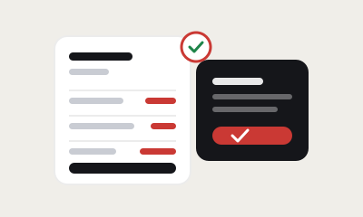

Merik brings employees, attendance, leave, payroll, daily tasks, clients and assets into one secure company workspace — so the numbers you record on Monday are the numbers payroll uses on the 30th.
Merik is an all-in-one workforce management platform for small and growing businesses. It combines employee management, attendance tracking, leave and work-from-home requests, monthly payroll and payslips, daily task tracking, client and project management, quotes and invoices, and asset tracking into one secure company workspace.
Every company gets an isolated workspace enforced at the database level. Employees get self-service — they mark their own attendance, request leave, log daily work and download payslips — so HR stops being the bottleneck for routine requests. Merik is free to start, and a workspace takes under five minutes to create.
Eight connected modules sharing one dataset — so nothing has to be typed twice.
From the day someone joins to the day payroll runs — without switching tools or re-typing numbers.
One source of truth for departments, designations, salary history and documents — with per-employee detail pages, login provisioning and clean offboarding.
Geolocated check-in and check-out, late marks, half-days and a live company-wide view — captured once, on the day, by the person it belongs to.
Requests with date ranges, one-tap approval, and paid vs unpaid tracked separately so month-end stays accurate.
Monthly runs computed on the server from attendance already recorded. Payslips generated and emailed in bulk.
Time spent, status, blockers and proof links per client and project — with CSV export and full-text search.
Per-project rollups, contributor breakdowns and a time estimator that learns from your own history — it backtests its own weights against tasks whose real duration you already know, instead of guessing.
Client records, projects per client, line-item quotes that convert straight into invoices — and the hours your team logged sitting right next to them.
Hardware register with assignment history, plus software seats and monthly spend per tool.
Monthly reviews grounded in the task log and attendance the employee already filed.
One workspace per company, enforced by row-level security in Postgres — not just in app code.
Left: five spreadsheets and a WhatsApp group. Right: one workspace.
Move the sliders. The estimate updates live — it is your inputs, not our marketing numbers.
Assumes Merik removes about 75% of the manual admin (re-keying, chasing timesheets, rebuilding sheets) because attendance, leave and payroll share one dataset. Your own inputs drive every number above — adjust them to match your team. See the full method and where the hours go →
No lengthy onboarding, no IT project. Create a workspace and start managing today.
Sign up and set up your company workspace in minutes. Everything your team needs lives in one isolated, secure place.
Employees self sign-up and land in the right department with their designation and CTC ready to go.
Track attendance and tasks each day, approve leave, and let payroll flow from the data you already captured.
Your team logs daily work against a client and project, so you can finally answer "did that retainer make money?" without rebuilding a timesheet from memory. Quotes convert into invoices, and project rollups show where the hours actually went.
Attendance, leave and holidays feed one payroll run. Nobody re-types a register into a salary sheet, and every payslip traces back to dated entries you can show an employee who disagrees.
Staff check in from their own phone and the location is captured and turned into a readable place name. You see who started where, without buying a biometric device for every site.
A daily task log with time spent, blockers and proof links gives you the same signal as a standup — without the standing meeting. Work-from-home is a request type that's approved and recorded, not an unwritten arrangement.
Multi-tenant done the boring, correct way — isolation enforced by the database, not by hoping the app remembers.
Create a company workspace at no cost and invite every employee. No card, no setup fee.
For teams replacing spreadsheets today
For teams that want it set up for them
The things people ask us before they sign up.
Merik is an all-in-one workforce management platform that combines employee management, attendance tracking, leave management, payroll, daily task tracking, clients and invoicing, and asset tracking in a single secure company workspace. Each company gets its own isolated workspace, and employees get self-service access to their own attendance, leave, tasks and payslips.
Yes. Merik is built for small and growing businesses — typically 5 to 200 employees — that want to replace spreadsheets and multiple disconnected tools with one platform. A company workspace can be created in under five minutes with no IT project and no setup fee.
Yes. Attendance and leave data flow directly into monthly payroll, so gross pay, deductions and net pay are calculated from the days already recorded — without re-keying numbers between systems. All salary math runs on the server, never in the browser. Read how that works →
Yes. Employees get their own dashboard where they can mark attendance with geolocated check-in and check-out, request leave or work-from-home, log their daily tasks, keep personal notes and to-dos, and download their own payslips. More on employee self-service →
Merik is free to start. You can create a company workspace at no cost, invite your whole team with unlimited employee self sign-up, and use attendance, leave, task tracking, payroll and payslips. There is no setup fee and no card required to begin.
Under five minutes to create the workspace itself. Most teams are running daily attendance and task logging on day one, and complete their first payroll run in the same month, because attendance data is captured from the start. See a full migration plan →
Yes. Merik is multi-tenant and every company gets one isolated workspace, enforced in the Postgres database by row-level security rather than only in application code. One company's users cannot read another company's rows. What to check in any HR tool →
Yes. Employees check in and out from their own device and the location is captured and reverse-geocoded to a readable place name, so "present" means something verifiable for field staff. Work-from-home is a separate request type that is approved and recorded like leave. Attendance for field teams →
Yes. Merik includes client records, projects per client, line-item quotes that convert into invoices, and project-level intelligence that rolls up the hours logged in the daily task log against each client and project. See the quote-to-invoice flow →
Merik has an optional AI layer that can draft performance summaries and quotes for a human to edit. It is off unless enabled, gated per feature and per company with a monthly call cap, and drafts are always reviewed by a person before use. Core features work with AI switched off entirely. What AI actually helps with in HR →
Forty practical, no-fluff guides on attendance, payroll, leave, tasks, clients and HR.

How connecting attendance and leave directly to payroll removes errors.

How to make "present" verifiable without a biometric device per site.

Turn the hours your team already logs into a per-project margin.
Tell us a bit about your business and we'll get your workspace set up for you.
Create your company workspace today and bring employees, attendance, leave, payroll and tasks together.